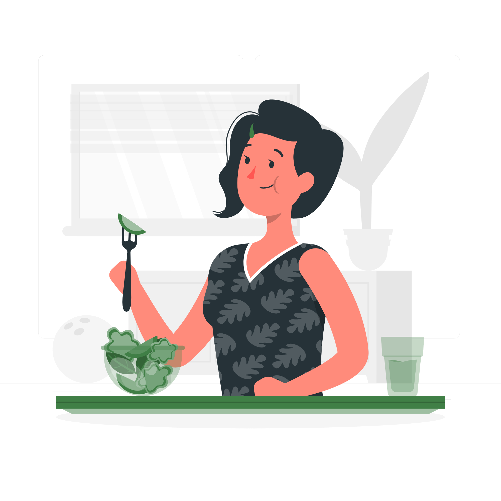

Uma vez por semana, tente comer uma refeição 100% vegetariana (contendo leguminosas como as lentilhas, os feijões, as ervilhas e grão de bico) no lugar de uma refeição à base de carne.
São necessários mais recursos naturais para produzir carne, principalmente água. Milhões de acres de floresta tropical úmida também são derrubados e queimados para transformar as terras em pastos para o gado.
Diversificando a sua alimentação, você poderá descobrir cereais “ancestrais”, como a quinoa. Existem, por exemplo, mais de 200 variedades de quinoa, adaptadas a diferentes tipos de clima.
